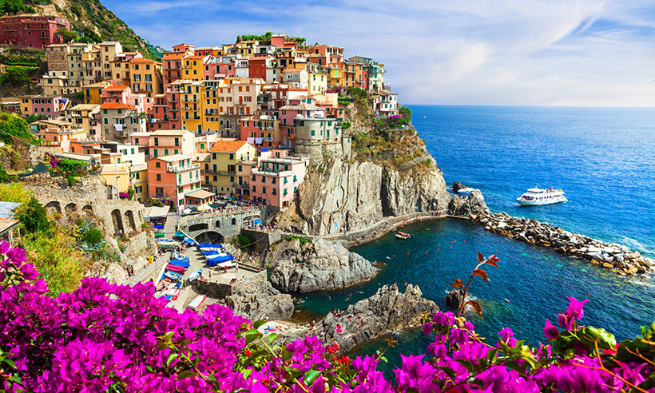
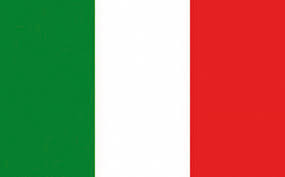
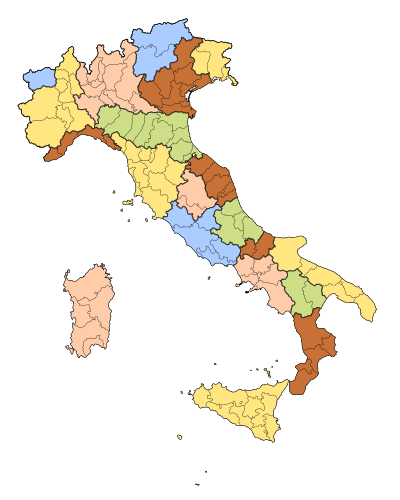

Italia
Italia, país europeo con una larga costa mediterránea, influyó considerablemente en la cultura y la cocina occidental. Su capital, Roma, es hogar del Vaticano, de ruinas antiguas y de obras de arte emblemáticas. Otras ciudades importantes son Florencia, con obras maestras del renacimiento, como el "David" de Miguel Ángel y el Domo de Brunelleschi; Venecia, la ciudad de los canales; y Milán, la capital italiana de la moda.
Bandera
Italia, país europeo con una larga costa mediterránea, influyó considerablemente en la cultura y la cocina occidental. Su capital, Roma, es hogar del Vaticano, de ruinas antiguas y de obras de arte emblemáticas. Otras ciudades importantes son Florencia, con obras maestras del renacimiento, como el "David" de Miguel Ángel y el Domo de Brunelleschi; Venecia, la ciudad de los canales; y Milán, la capital italiana de la moda.
Capital
Italia, país europeo con una larga costa mediterránea, influyó considerablemente en la cultura y la cocina occidental. Su capital, Roma, es hogar del Vaticano, de ruinas antiguas y de obras de arte emblemáticas. Otras ciudades importantes son Florencia, con obras maestras del renacimiento, como el "David" de Miguel Ángel y el Domo de Brunelleschi; Venecia, la ciudad de los canales; y Milán, la capital italiana de la moda.

Geografia
Italia, país europeo con una larga costa mediterránea, influyó considerablemente en la cultura y la cocina occidental. Su capital, Roma, es hogar del Vaticano, de ruinas antiguas y de obras de arte emblemáticas. Otras ciudades importantes son Florencia, con obras maestras del renacimiento, como el "David" de Miguel Ángel y el Domo de Brunelleschi; Venecia, la ciudad de los canales; y Milán, la capital italiana de la moda.
